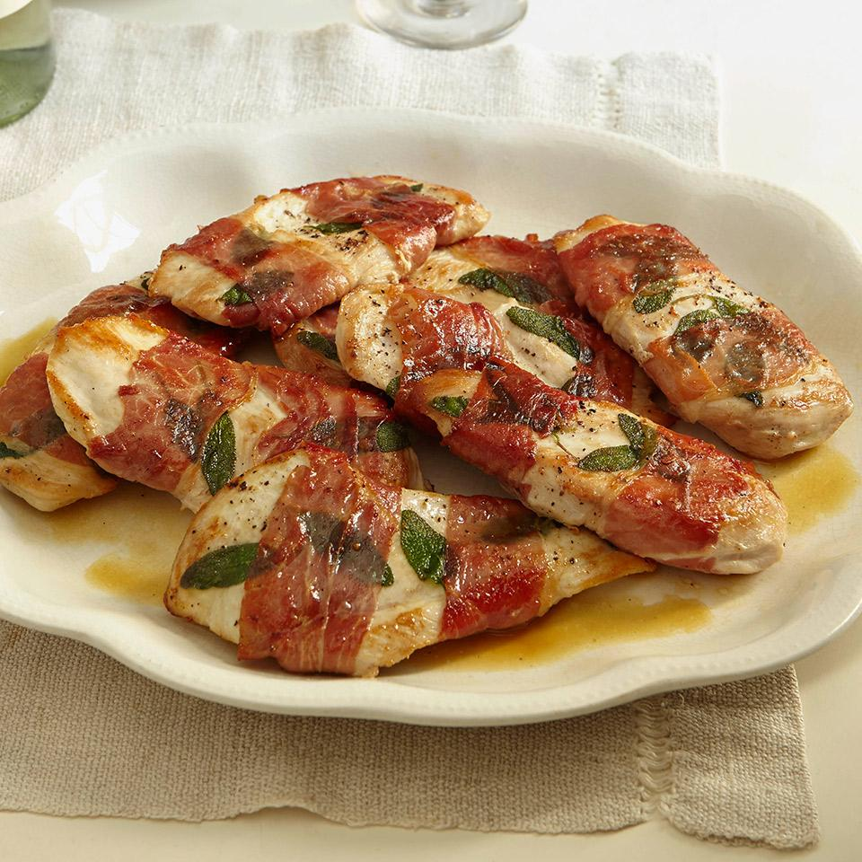

Sandy Chicken

Sandy Chicken
Ready in 30 minutes. You'll wrap pounded chicken cutlets and sage leaves in prosciutto and pan-fry them. "Quick, easy, and so delicious!" says SandyG.
Ingredients
- 8 (6 ounce) chicken cutlets
- 1 teaspoon salt
- ½ teaspoon black pepper
- 16 large fresh sage leaves
- 16 thin slices prosciutto
- 3 tablespoons olive oil
- 1 cup dry white wine
- 1 cup low-sodium chicken broth
- ½ stick butter